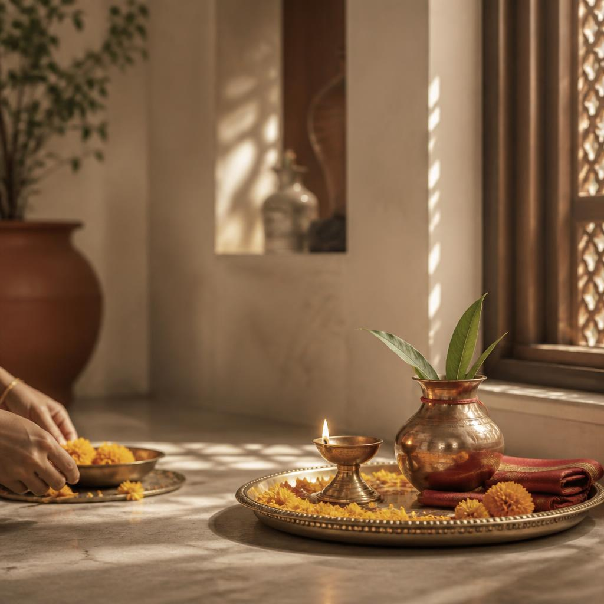
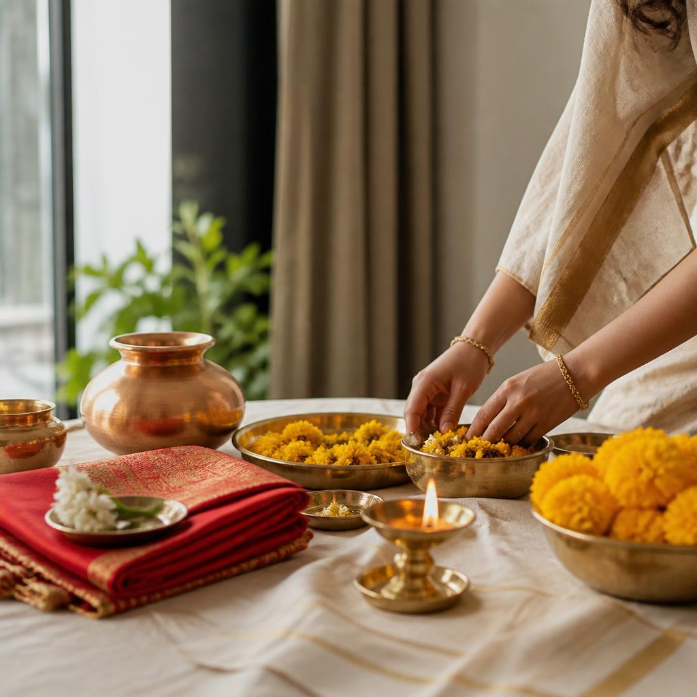
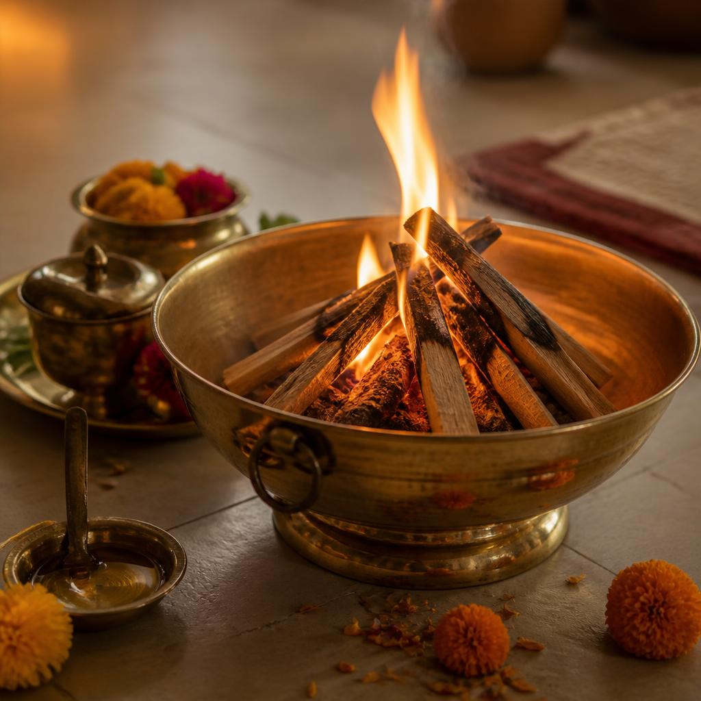
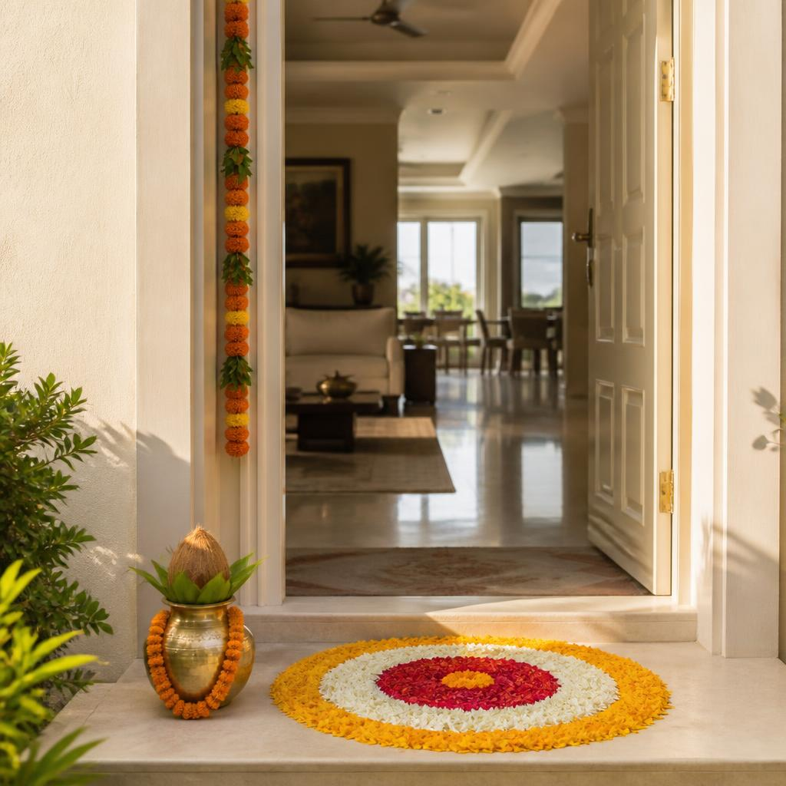

<!DOCTYPE html>
<html lang="en"><head>
<meta charset="utf-8"><meta name="viewport" content="width=device-width,initial-scale=1">
<title>Tridika Rituals | Puja Services &amp; Vedic Rituals</title>
<meta name="description" content="Tridika Rituals arranges Puja services at your doorstep — Pandit arrangement, Puja Samagri and complete ritual coordination. We Handle the Rituals, You Cherish the Moments.">
<link rel="preconnect" href="https://fonts.googleapis.com"><link rel="preconnect" href="https://fonts.gstatic.com" crossorigin>
<link href="https://fonts.googleapis.com/css2?family=DM+Sans:wght@400;500;600;700&family=Playfair+Display:wght@500;600;700&display=swap" rel="stylesheet">
<style>
:root{--serif:'Playfair Display',Georgia,serif;--sans:'DM Sans',system-ui,sans-serif;--radius:1rem;}
*{box-sizing:border-box;}
html{scroll-behavior:smooth;}
body{margin:0;font-family:var(--sans);background:#faf8f2;color:#2e2620;-webkit-font-smoothing:antialiased;}
a{color:inherit;text-decoration:none;}
button,input,textarea,select{font:inherit;}
button,a{-webkit-tap-highlight-color:transparent;}
img{max-width:100%;}
.serif{font-family:var(--serif);}
.wrap{width:min(1160px,calc(100% - 48px));margin-inline:auto;}
.topline{background:#eee2cf;color:#65503d;font-size:11px;letter-spacing:.13em;text-align:center;padding:9px 16px;}
.header{position:sticky;top:0;z-index:30;background:rgba(250,248,242,.94);backdrop-filter:blur(12px);border-bottom:1px solid #e7e0d3;}
.navrow{display:flex;align-items:center;justify-content:space-between;min-height:84px;gap:24px;}
.brand{display:flex;align-items:center;gap:13px;}
.brand img.logo{height:58px;width:auto;display:block;}
.brand-text{display:flex;flex-direction:column;}
.brand-text strong{display:none;}
.brand-text .brand-tagline{color:#74695a;font:italic 10px/1.25 var(--serif);max-width:150px;}
.navlinks{display:flex;gap:29px;align-items:center;font-size:13px;color:#514b40;}
.navlinks a{transition:color .2s;cursor:pointer;}
.navlinks a:hover,.navlinks a.active{color:#9d4d34;}
.nav-actions{display:flex;align-items:center;gap:12px;}
.menu-toggle{display:none;border:0;background:none;color:#403a31;padding:10px;cursor:pointer;}
.btn{border:1px solid transparent;border-radius:99px;padding:13px 21px;display:inline-flex;align-items:center;justify-content:center;gap:9px;font-weight:600;font-size:13px;cursor:pointer;transition:transform .2s,background .2s,color .2s;}
.btn:hover{transform:translateY(-2px);}
.btn svg{width:15px;height:15px;}
.btn-primary{color:#fffaf0;background:#a65035;}
.btn-primary:hover{background:#86412d;}
.btn-dark{color:#fffaf0;background:#574234;}
.btn-dark:hover{background:#403126;}
.btn-quiet{border-color:#c9bdab;color:#544b3d;background:transparent;}
.btn-quiet:hover{background:#eee8dc;}
.btn-small{color:#fffaf0;background:#a65035;border-radius:99px;font-size:11px;line-height:1;padding:10px 13px;white-space:nowrap;cursor:pointer;}
.btn-small:hover{background:#86412d;}
.text-link{color:#8c482f;display:inline-flex;gap:7px;align-items:center;font-size:13px;font-weight:600;cursor:pointer;}
.eyebrow{color:#9b563c;text-transform:uppercase;letter-spacing:.19em;font-size:10px;font-weight:700;display:flex;align-items:center;gap:12px;}
.eyebrow:before{content:'';width:28px;height:1px;background:#b26d4f;}
.hero{background:#f0eadf;position:relative;overflow:hidden;}
.hero-grid{display:grid;grid-template-columns:.95fr 1.05fr;min-height:600px;align-items:center;}
.hero-copy{padding:78px 4vw 82px 0;position:relative;z-index:1;}
.hero h1{font:500 clamp(42px,5.2vw,66px)/1.09 var(--serif);letter-spacing:-.035em;margin:22px 0 20px;color:#342d24;max-width:630px;}
.hero h1 em{color:#a65035;font-style:normal;}
.hero-tagline{color:#9b563c;font:italic 15px/1.4 var(--serif);letter-spacing:.01em;margin:0 0 10px;}
.hero-copy p{color:#655e52;font-size:15px;line-height:1.8;max-width:470px;}
.hero-actions{display:flex;gap:12px;margin-top:30px;flex-wrap:wrap;}
.hero-note{margin-top:34px;display:flex;align-items:center;gap:10px;color:#706756;font-size:11px;letter-spacing:.03em;}
.hero-note:before{content:'';width:7px;height:7px;border-radius:50%;background:#7e8a62;}
.hero-visual{height:540px;position:relative;margin-right:calc((100vw - min(1160px,100vw - 48px))/ -2);overflow:hidden;border-radius:260px 0 0 260px;}
.hero-visual img{width:100%;height:100%;object-fit:cover;object-position:55% center;}
.hero-visual:after{content:'';position:absolute;inset:0;background:linear-gradient(90deg,rgba(240,234,223,.3),transparent 34%),linear-gradient(0deg,rgba(47,39,27,.14),transparent 34%);}
.hero-stamp{position:absolute;z-index:2;bottom:30px;right:5%;border:1px solid rgba(255,255,255,.55);color:#fff;background:rgba(48,45,35,.28);backdrop-filter:blur(10px);padding:14px 19px;border-radius:99px;font-size:10px;letter-spacing:.12em;text-transform:uppercase;}
.panchang{background:#efe6d7;border-top:1px solid #e4d7c1;border-bottom:1px solid #e4d7c1;}
.panchang-inner{display:flex;align-items:center;gap:18px 26px;padding:17px 0;flex-wrap:wrap;}
.panchang-head{display:flex;flex-direction:column;gap:5px;min-width:135px;}
.panchang-head strong{font:500 18px var(--serif);color:#5a3522;line-height:1;}
.ptag{align-self:flex-start;background:rgba(201,140,30,.12);color:#9a6a1a;border:1px solid rgba(201,140,30,.4);border-radius:99px;padding:2px 9px;font-size:9px;font-weight:700;letter-spacing:.09em;text-transform:uppercase;}
.panchang-items{display:flex;gap:12px;flex-wrap:wrap;flex:1;}
.pcell{background:#fbf7ef;border:1px solid #e7dcc8;border-radius:11px;padding:8px 14px;min-width:116px;}
.pcell span{display:block;font-size:9px;letter-spacing:.11em;text-transform:uppercase;color:#9b8a6f;margin-bottom:3px;}
.pcell strong{font-size:13px;color:#43392e;font-weight:600;}
.panchang-note{flex-basis:100%;font-size:10.5px;color:#8a7c64;font-style:italic;margin-top:2px;}
@media(max-width:720px){.panchang-items{gap:8px;}.pcell{min-width:calc(50% - 4px);}}
.section{padding:90px 0;}
.section-soft{background:#f4f0e7;}
.section-green{background:#efe6d7;color:#43392e;}
.section-heading{display:flex;justify-content:space-between;align-items:end;gap:30px;margin-bottom:34px;}
.section-heading h2,.page-heading h1{font:500 clamp(34px,4vw,50px)/1.12 var(--serif);letter-spacing:-.025em;margin:13px 0 0;color:#342d24;}
.section-heading p{max-width:410px;color:#71695b;line-height:1.7;font-size:14px;margin:0;}
.service-grid{display:grid;grid-template-columns:repeat(3,1fr);gap:16px;}
.service-card{background:#fbf9f4;border:1px solid #e7dfd1;border-radius:16px;overflow:hidden;display:flex;flex-direction:column;transition:transform .25s,border-color .25s,box-shadow .25s;}
.service-card:hover{transform:translateY(-4px);border-color:#c9aa91;box-shadow:0 14px 30px rgba(60,44,27,.07);}
.service-photo{height:168px;position:relative;overflow:hidden;background:#e7ddcd;}
.service-photo img{display:block;width:100%;height:100%;object-fit:cover;transition:transform .45s;}
.service-card:hover .service-photo img{transform:scale(1.035);}
.dur-badge{position:absolute;left:12px;bottom:12px;color:#fffaf0;padding:6px 11px;border-radius:99px;background:rgba(48,38,28,.55);backdrop-filter:blur(8px);font-size:10.5px;font-weight:600;letter-spacing:.02em;}
.cat-tag{position:absolute;right:12px;top:12px;color:#5a3522;padding:5px 10px;border-radius:99px;background:rgba(246,238,224,.92);font-size:9px;font-weight:700;letter-spacing:.06em;text-transform:uppercase;}
.service-card-content{flex:1;display:flex;flex-direction:column;padding:18px 20px 18px;}
.service-card h3{font:600 20px/1.26 var(--serif);margin:0 0 8px;color:#40372b;}
.service-card p{color:#766d60;font-size:12px;line-height:1.65;margin:0 0 16px;}
.service-card-actions{display:flex;align-items:center;justify-content:space-between;gap:8px;margin-top:auto;}
.service-card .text-link{font-size:12px;white-space:nowrap;}
.catalogue-controls{display:flex;flex-wrap:wrap;gap:12px;align-items:center;justify-content:space-between;margin-bottom:26px;}
.cat-chips{display:flex;flex-wrap:wrap;gap:8px;}
.chip{border:1px solid #d8cbb6;background:#fbf7ef;color:#5c5347;border-radius:99px;padding:9px 15px;font-size:12px;font-weight:600;cursor:pointer;transition:all .2s;}
.chip:hover{border-color:#b98f6f;}
.chip.active{background:#a65035;border-color:#a65035;color:#fffaf0;}
.search-box{position:relative;}
.search-box input{border:1px solid #d9d0c1;background:#fffdf9;border-radius:99px;padding:11px 16px 11px 38px;font-size:13px;width:230px;outline:none;color:#3d382f;}
.search-box input:focus{border-color:#a65035;box-shadow:0 0 0 3px rgba(166,80,53,.1);}
.search-box svg{position:absolute;left:13px;top:50%;transform:translateY(-50%);color:#9a8c77;width:16px;height:16px;}
.cat-count{color:#8a8071;font-size:12px;margin:0 0 18px;}
.empty-note{color:#8a8071;font-size:14px;padding:40px 0;text-align:center;}
.assurance-grid{display:grid;grid-template-columns:repeat(4,1fr);gap:25px;}
.assurance{border-top:1px solid #d3c1a7;padding-top:21px;}
.assurance .ic{color:#a96c3f;margin-bottom:18px;font-size:24px;line-height:1;}
.assurance h3{font:500 20px var(--serif);margin:0 0 10px;}
.assurance p{color:#6d6254;line-height:1.7;font-size:13px;margin:0;}
.steps{display:grid;grid-template-columns:repeat(4,1fr);margin-top:36px;}
.step{padding:0 24px 0 0;}
.step-index{display:flex;align-items:center;gap:13px;color:#a65a3c;font-size:11px;letter-spacing:.1em;}
.step-index:after{content:'';height:1px;background:#d5c8b4;flex:1;}
.step h3{font:500 22px var(--serif);margin:20px 0 9px;}
.step p{color:#71695b;font-size:13px;line-height:1.7;max-width:230px;}
.split-story{display:grid;grid-template-columns:1fr 1fr;gap:70px;align-items:center;}
.story-image{min-height:420px;border-radius:48% 48% 15px 15px;overflow:hidden;background:#e5d9c5;}
.story-image img{width:100%;height:100%;min-height:420px;display:block;object-fit:cover;}
.story-copy h2{font:500 clamp(32px,4vw,46px)/1.16 var(--serif);margin:15px 0 20px;}
.story-copy p{color:#6c6559;font-size:14px;line-height:1.8;}
.feature-list{padding:0;margin:24px 0 28px;list-style:none;display:grid;gap:12px;}
.feature-list li{display:flex;align-items:center;gap:11px;font-size:13px;color:#4f493e;}
.feature-list li:before{content:'✓';color:#a96c3f;font-weight:700;}
.cta-band{background:#e9dfce;padding:60px 0;}
.cta-inner{display:flex;justify-content:space-between;align-items:center;gap:30px;}
.cta-inner h2{font:500 clamp(28px,3.4vw,40px)/1.2 var(--serif);max-width:560px;margin:10px 0 0;}
.cta-actions{display:flex;gap:10px;flex-wrap:wrap;}
.page-hero{background:#f0eadf;padding:70px 0 64px;}
.page-heading{max-width:780px;}
.page-heading p{color:#6e665a;font-size:15px;line-height:1.8;max-width:650px;margin:16px 0 0;}
.breadcrumb{color:#887b68;font-size:11px;margin-bottom:22px;display:flex;gap:9px;align-items:center;}
.breadcrumb a{cursor:pointer;}
.detail-layout{display:grid;grid-template-columns:1fr 370px;gap:60px;align-items:start;}
.detail-panel{background:#fbf9f4;border:1px solid #e6dece;border-radius:18px;padding:30px;position:sticky;top:108px;}
.detail-panel h2{font:500 26px var(--serif);margin:0 0 18px;}
.detail-row{display:flex;justify-content:space-between;gap:18px;padding:13px 0;border-top:1px solid #e9e2d5;font-size:12px;}
.detail-row span:first-child{color:#817868;}
.detail-row span:last-child{font-weight:600;text-align:right;}
.included{display:grid;grid-template-columns:1fr 1fr;gap:14px;margin-top:26px;}
.included-item{display:flex;gap:11px;padding:18px;border-radius:13px;background:#f5f1e8;color:#4f493f;font-size:13px;line-height:1.55;}
.included-item:before{content:'✓';color:#a65a3c;font-weight:700;}
.form-card{background:#fbf9f4;border:1px solid #e5ddcf;border-radius:18px;padding:26px;}
.form-card h2{font:500 26px var(--serif);margin:0 0 7px;}
.form-intro{color:#766e61;font-size:12px;line-height:1.6;margin:0 0 20px;}
.form-grid{display:grid;grid-template-columns:1fr 1fr;gap:14px;}
.field{display:flex;flex-direction:column;gap:6px;margin-bottom:14px;}
.field.full{grid-column:1/-1;}
.field label{color:#4d463b;font-size:11px;font-weight:600;}
.field input,.field textarea,.field select{width:100%;padding:12px 13px;background:#fffdf9;border:1px solid #d9d0c1;border-radius:9px;outline:none;color:#3d382f;font-size:13px;}
.field input:focus,.field textarea:focus,.field select:focus{border-color:#a65035;box-shadow:0 0 0 3px rgba(166,80,53,.1);}
.field textarea{min-height:90px;resize:vertical;}
.required-note{color:#817868;font-size:10px;margin:-2px 0 16px;}
.success-box{padding:22px;border-radius:13px;background:#f5eddf;border:1px solid #decba9;}
.success-box h3{font:500 22px var(--serif);margin:0 0 9px;color:#574234;}
.success-box p{font-size:12px;line-height:1.7;color:#665746;}
.success-box .btn{width:100%;margin-top:7px;}
.fine-print{color:#887f70;font-size:10px;line-height:1.5;margin-top:12px;}
.faq-list{max-width:850px;}
.faq-item{border-bottom:1px solid #ded6c9;}
.faq-question{width:100%;background:none;border:0;text-align:left;display:flex;justify-content:space-between;gap:20px;align-items:center;padding:22px 0;color:#40392f;cursor:pointer;font:500 18px var(--serif);}
.faq-answer{color:#71695b;font-size:13px;line-height:1.8;padding:0 45px 20px 0;max-width:720px;}
.contact-grid{display:grid;grid-template-columns:.8fr 1.2fr;gap:60px;align-items:start;}
.contact-details{background:#f3eadb;color:#45372c;border:1px solid #e5d6bf;border-radius:18px;padding:32px;}
.contact-details h2{font:500 28px var(--serif);margin:0 0 9px;}
.contact-details p{font-size:13px;color:#706352;line-height:1.75;}
.contact-line{border-top:1px solid #dfcfb5;padding:16px 0;}
.contact-line span{display:block;color:#927a5e;font-size:10px;letter-spacing:.12em;text-transform:uppercase;margin-bottom:7px;}
.contact-line strong{font-size:13px;font-weight:500;}
.whatsapp-sticky{display:none;position:fixed;z-index:40;bottom:14px;left:14px;right:14px;box-shadow:0 9px 25px rgba(32,47,36,.24);}
.footer{background:#332b24;color:#f6f1e7;padding:56px 0 24px;}
.footer-grid{display:grid;grid-template-columns:1.4fr 1fr 1fr 1fr;gap:38px;}
.footer-brand img{height:54px;margin-bottom:16px;background:#f7f2e9;padding:11px 16px;border-radius:14px;display:inline-block;box-shadow:0 6px 16px rgba(0,0,0,.2);}
.footer p{color:#bcbcaf;font-size:12px;line-height:1.8;max-width:280px;}
.footer h3{font-size:10px;letter-spacing:.16em;text-transform:uppercase;color:#d8bd8a;margin:4px 0 18px;}
.footer-links{display:grid;gap:12px;color:#d9d4c8;font-size:12px;}
.footer-links a{cursor:pointer;display:flex;align-items:center;gap:9px;}
.footer-links a svg{flex:none;opacity:.92;}
.footer-links a:hover{color:#e5bd7e;}
.footer-bottom{border-top:1px solid rgba(255,255,255,.15);margin-top:44px;padding-top:18px;color:#aaa99e;font-size:10px;display:flex;justify-content:space-between;gap:20px;flex-wrap:wrap;}
.not-found{padding:100px 20px;text-align:center;}
.mobile-nav{display:none;}
@media(max-width:900px){
 .navlinks{gap:16px;font-size:12px;}
 .assurance-grid{grid-template-columns:repeat(2,1fr);}
 .detail-layout{grid-template-columns:1fr 330px;gap:30px;}
}
@media(max-width:720px){
 .wrap{width:min(100% - 34px,560px);}
 .navrow{min-height:72px;}
 .brand img.logo{height:46px;}
 .brand-text .brand-tagline{display:none;}
 .navlinks{display:none;}
 .nav-actions .btn{display:none;}
 .menu-toggle{display:grid;place-items:center;}
 .mobile-nav{display:grid;position:absolute;left:0;right:0;top:100%;background:#faf8f2;padding:7px 22px 18px;border-bottom:1px solid #e7e0d3;box-shadow:0 15px 20px rgba(55,42,25,.08);}
 .mobile-nav a{padding:13px 4px;border-bottom:1px solid #eee8dd;font-size:13px;cursor:pointer;}
 .mobile-nav .btn{margin-top:14px;}
 .hero-grid{grid-template-columns:1fr;min-height:0;}
 .hero-copy{padding:52px 0 32px;}
 .hero h1{font-size:46px;}
 .hero-visual{height:340px;margin:0 -17px;border-radius:110px 0 0 0;}
 .section{padding:64px 0;}
 .section-heading{display:block;margin-bottom:24px;}
 .section-heading p{margin-top:14px;}
 .service-grid{grid-template-columns:1fr 1fr;gap:10px;}
 .service-photo{height:132px;}
 .service-card-content{padding:15px 14px 15px;}
 .service-card h3{font-size:17px;}
 .assurance-grid{grid-template-columns:1fr 1fr;gap:24px 18px;}
 .steps{grid-template-columns:1fr 1fr;row-gap:28px;}
 .split-story{grid-template-columns:1fr;gap:28px;}
 .story-image{min-height:280px;order:2;}
 .cta-inner{display:block;}
 .cta-actions{margin-top:22px;}
 .detail-layout,.contact-grid{grid-template-columns:1fr;gap:26px;}
 .detail-panel{position:static;}
 .included{grid-template-columns:1fr;}
 .form-grid{grid-template-columns:1fr;gap:0;}
 .field.full{grid-column:auto;}
 .search-box input{width:100%;}
 .search-box{width:100%;}
 .catalogue-controls{flex-direction:column;align-items:stretch;}
 .footer-grid{grid-template-columns:1fr 1fr;gap:30px 20px;}
 .footer-grid>div:first-child{grid-column:1/-1;}
 .whatsapp-sticky{display:inline-flex;}
 body{padding-bottom:70px;}
}
@media(max-width:400px){
 .service-grid{grid-template-columns:1fr;}
 .assurance-grid,.steps{grid-template-columns:1fr;}
}
</style>
</head><body><div id="app"></div><script>
const BRAND={name:'Tridika Rituals',tagline:'We Handle the Rituals, You Cherish the Moments.',category:'Vedic Services & Puja Services',
  phone:'+91 87662 46919',phone2:'+91 93103 54931',whatsappNumber:'918766246919',
  instagram:'tridikarituals',instaUrl:'https://instagram.com/tridikarituals',
  facebook:'TridikaRituals',fbUrl:'https://facebook.com/TridikaRituals',
  email:'tridikarituals@gmail.com',serviceArea:'Delhi / NCR'};
const CATALOGUE=[{"slug": "ayushya-havan", "name": "Ayushya Havan", "category": "Deity Pujas, Havan & Path", "duration": "~2 hrs", "desc": "A sacred fire ritual performed to seek blessings for long life, good health and well-being."}, {"slug": "baglamukhi-devi-pujan-havan", "name": "Baglamukhi Devi Pujan & Havan", "category": "Deity Pujas, Havan & Path", "duration": "Extended (~24 hrs)", "desc": "Worship of Goddess Baglamukhi with Havan, traditionally undertaken for protection, courage and overcoming obstacles or opposition."}, {"slug": "bajrang-baan-path", "name": "Bajrang Baan Path", "category": "Deity Pujas, Havan & Path", "duration": "~2 hrs", "desc": "Recitation of Bajrang Baan in devotion to Lord Hanuman, seeking strength, protection and relief from fear."}, {"slug": "brihaspati-puja-udyapan", "name": "Brihaspati Puja Udyapan", "category": "Deity Pujas, Havan & Path", "duration": "~2 hrs", "desc": "The concluding ritual after observing Thursday fasts or worship dedicated to Brihaspati, expressing gratitude and completing the vow."}, {"slug": "chandi-havan", "name": "Chandi Havan", "category": "Deity Pujas, Havan & Path", "duration": "~4 hrs", "desc": "A sacred fire ritual dedicated to Goddess Chandi (Durga), performed to seek divine strength, protection and removal of obstacles."}, {"slug": "durga-puja", "name": "Durga Puja", "category": "Deity Pujas, Havan & Path", "duration": "~2 hrs", "desc": "Worship of Goddess Durga to seek strength, protection, courage and blessings for the family."}, {"slug": "ek-mukhi-hanuman-kavach-puja", "name": "Ek Mukhi Hanuman Kavach Puja", "category": "Deity Pujas, Havan & Path", "duration": "~3.5 hrs", "desc": "A Hanuman-focused protective worship, traditionally performed to seek courage, strength and protection from negativity."}, {"slug": "ganpati-stotram", "name": "Ganpati Stotram", "category": "Deity Pujas, Havan & Path", "duration": "~2 hrs", "desc": "Recitation of hymns praising Lord Ganesha to seek wisdom, auspiciousness and success in new undertakings."}, {"slug": "gayatri-havan", "name": "Gayatri Havan", "category": "Deity Pujas, Havan & Path", "duration": "~2 hrs", "desc": "A fire ritual with the Gayatri Mantra, performed to seek wisdom, clarity, inner purification and well-being."}, {"slug": "hanuman-chalisa-path", "name": "Hanuman Chalisa Path", "category": "Deity Pujas, Havan & Path", "duration": "~2 hrs", "desc": "Recitation of the Hanuman Chalisa to seek courage, devotion, protection and peace of mind."}, {"slug": "kuber-upasana-puja", "name": "Kuber Upasana Puja", "category": "Deity Pujas, Havan & Path", "duration": "~3 hrs", "desc": "Worship of Lord Kuber, traditionally performed to seek responsible prosperity, financial stability and abundance."}, {"slug": "lakshmi-narsimha-havan", "name": "Lakshmi Narsimha Havan", "category": "Deity Pujas, Havan & Path", "duration": "~2.5 hrs", "desc": "A sacred fire ritual dedicated to Lakshmi Narasimha, seeking divine protection, courage and prosperity."}, {"slug": "maha-mrityunjay-jaap-havan", "name": "Maha Mrityunjay Jaap & Havan", "category": "Deity Pujas, Havan & Path", "duration": "3 days · ~4 hrs/day", "desc": "Chanting of the Mahamrityunjaya Mantra with Havan, traditionally undertaken to pray for health, protection and strength during difficult times."}, {"slug": "mahalakshmi-puja", "name": "Mahalakshmi Puja", "category": "Deity Pujas, Havan & Path", "duration": "~2 hrs", "desc": "Worship of Goddess Mahalakshmi to seek prosperity, abundance, harmony and blessings for the household."}, {"slug": "mata-ki-chowki", "name": "Mata Ki Chowki", "category": "Deity Pujas, Havan & Path", "duration": "~4 hrs", "desc": "A devotional gathering with bhajans and prayers in honour of the Divine Mother, seeking blessings and family well-being."}, {"slug": "musical-sunderkand-path", "name": "Musical Sunderkand Path", "category": "Deity Pujas, Havan & Path", "duration": "~2.5 hrs", "desc": "A musical recitation of Sundarkand from the Ramcharitmanas, inspiring devotion, courage and faith in Lord Hanuman."}, {"slug": "nav-durga-path", "name": "Nav Durga Path", "category": "Deity Pujas, Havan & Path", "duration": "Multi-day · ~1.5 hrs/day", "desc": "Recitation of sacred texts in honour of the nine forms of Goddess Durga, traditionally performed for devotion and spiritual strength."}, {"slug": "navami-puja-havan", "name": "Navami Puja & Havan", "category": "Deity Pujas, Havan & Path", "duration": "~2.5 hrs", "desc": "Worship and Havan on Navami, commonly associated with Goddess Durga, seeking blessings, strength and protection."}, {"slug": "rudrabhishek-puja", "name": "Rudrabhishek Puja", "category": "Deity Pujas, Havan & Path", "duration": "~2.5–3 hrs", "desc": "Abhishek of Lord Shiva with sacred offerings and Vedic chants, performed to seek peace, blessings and spiritual well-being."}, {"slug": "sampoorna-akhand-ramayan-path", "name": "Sampoorna Akhand Ramayan Path", "category": "Deity Pujas, Havan & Path", "duration": "~24 hrs (continuous)", "desc": "Continuous recitation of the Ramcharitmanas, undertaken as an expression of devotion and to seek harmony and blessings."}, {"slug": "satyanarayan-katha", "name": "Satyanarayan Katha", "category": "Deity Pujas, Havan & Path", "duration": "~2 hrs", "desc": "Worship and narration of the Satyanarayan Katha to express gratitude and seek prosperity, peace and family well-being."}, {"slug": "shrimad-bhagwat-katha", "name": "Shrimad Bhagwat Katha", "category": "Deity Pujas, Havan & Path", "duration": "7 days · ~4 hrs/day", "desc": "A seven-day narration of the Shrimad Bhagavatam, fostering devotion to Lord Krishna and reflection on spiritual teachings."}, {"slug": "solah-somvar-udyapan-puja", "name": "Solah Somvar Udyapan Puja", "category": "Deity Pujas, Havan & Path", "duration": "~2.5 hrs", "desc": "The concluding ceremony after observing sixteen Monday fasts dedicated to Lord Shiva, expressing gratitude and completing the vow."}, {"slug": "sri-suktam-puja", "name": "Sri Suktam Puja", "category": "Deity Pujas, Havan & Path", "duration": "~2.5 hrs", "desc": "Recitation of Sri Suktam with worship of Goddess Lakshmi, seeking prosperity, abundance and well-being."}, {"slug": "sudarshan-puja", "name": "Sudarshan Puja", "category": "Deity Pujas, Havan & Path", "duration": "~2 hrs", "desc": "Worship of Lord Sudarshana (Vishnu's divine discus), traditionally performed for protection, peace and removal of obstacles."}, {"slug": "sunderkand-path", "name": "Sunderkand Path", "category": "Deity Pujas, Havan & Path", "duration": "~2.25 hrs", "desc": "Recitation of Sundarkand from the Ramcharitmanas, seeking devotion, courage and the blessings of Lord Hanuman."}, {"slug": "surya-puja", "name": "Surya Puja", "category": "Deity Pujas, Havan & Path", "duration": "~2.5 hrs", "desc": "Worship of the Sun God, traditionally performed to seek vitality, confidence and spiritual illumination."}, {"slug": "vishnu-sahasranam-puja", "name": "Vishnu Sahasranam Puja", "category": "Deity Pujas, Havan & Path", "duration": "~2.5 hrs", "desc": "Recitation of the thousand names of Lord Vishnu, performed to cultivate devotion, inner peace and spiritual well-being."}, {"slug": "dhanteras-puja", "name": "Dhanteras Puja", "category": "Festivals & Seasonal", "duration": "~2 hrs", "desc": "Worship performed on Dhanteras to seek blessings for prosperity, health and an auspicious festive season."}, {"slug": "diwali-lakshmi-pujan", "name": "Diwali Lakshmi Pujan", "category": "Festivals & Seasonal", "duration": "~1.25 hrs", "desc": "Worship of Goddess Lakshmi and Lord Ganesha on Diwali to welcome prosperity, auspiciousness and well-being."}, {"slug": "dussehra-puja", "name": "Dussehra Puja", "category": "Festivals & Seasonal", "duration": "~1.5 hrs", "desc": "Worship on Vijayadashami celebrating the victory of good over evil and seeking success in new beginnings."}, {"slug": "ganapati-sthapana", "name": "Ganapati Sthapana", "category": "Festivals & Seasonal", "duration": "~1 hr", "desc": "Ceremonial installation and worship of Lord Ganesha at the start of Ganesh festivities, seeking wisdom and removal of obstacles."}, {"slug": "ganapati-sthapana-visarjan-puja", "name": "Ganapati Sthapana & Visarjan Puja", "category": "Festivals & Seasonal", "duration": "~2 hrs", "desc": "Installation, worship and ceremonial immersion of Lord Ganesha, expressing devotion and gratitude throughout the celebration."}, {"slug": "ganpati-visarjan", "name": "Ganpati Visarjan", "category": "Festivals & Seasonal", "duration": "~1 hr", "desc": "Farewell ritual and immersion of Lord Ganesha's idol at the end of the festival, accompanied by prayers and gratitude."}, {"slug": "hartalika-teej-puja", "name": "Hartalika Teej Puja", "category": "Festivals & Seasonal", "duration": "~1.5 hrs", "desc": "Worship observed during Hartalika Teej, traditionally undertaken for marital well-being and devotion to Goddess Parvati and Lord Shiva."}, {"slug": "holika-puja", "name": "Holika Puja", "category": "Festivals & Seasonal", "duration": "~1.5 hrs", "desc": "Worship around Holika Dahan, symbolizing the victory of good over evil and seeking protection from negativity."}, {"slug": "krishna-janmashtami-puja", "name": "Krishna Janmashtami Puja", "category": "Festivals & Seasonal", "duration": "~1.5 hrs", "desc": "Celebration of Lord Krishna's birth with prayers and rituals seeking devotion, joy and family blessings."}, {"slug": "navratri-puja-havan", "name": "Navratri Puja & Havan", "category": "Festivals & Seasonal", "duration": "~2 hrs", "desc": "Navratri prayers and Havan on the opening and concluding days to honour Goddess Durga and seek her blessings."}, {"slug": "ram-navami-puja", "name": "Ram Navami Puja", "category": "Festivals & Seasonal", "duration": "~2.5 hrs", "desc": "Celebration of Lord Rama's birth with worship and prayers for righteousness, peace and family well-being."}, {"slug": "tulsi-vivah", "name": "Tulsi Vivah", "category": "Festivals & Seasonal", "duration": "~2 hrs", "desc": "Ceremonial marriage of the Tulsi plant with Lord Vishnu or Shaligram, marking an auspicious occasion of devotion and family blessings."}, {"slug": "engagement-puja", "name": "Engagement Puja", "category": "Life Ceremonies (Sanskar)", "duration": "~1 hr", "desc": "A blessing ceremony marking a couple's engagement and seeking harmony and an auspicious start to married life."}, {"slug": "godh-bharai-puja", "name": "Godh Bharai Puja", "category": "Life Ceremonies (Sanskar)", "duration": "~2 hrs", "desc": "A traditional prenatal blessing ceremony celebrating the expectant mother and praying for her and the baby's well-being."}, {"slug": "haldi-ceremony-puja", "name": "Haldi Ceremony Puja", "category": "Life Ceremonies (Sanskar)", "duration": "~1 hr", "desc": "A pre-wedding turmeric ceremony with auspicious prayers for the couple's happiness and married life."}, {"slug": "janmadin-birthday-puja", "name": "Janmadin (Birthday) Puja", "category": "Life Ceremonies (Sanskar)", "duration": "~2 hrs", "desc": "A birthday worship to express gratitude and seek blessings for health, happiness and a fulfilling year ahead."}, {"slug": "marriage-ceremony-vivah", "name": "Marriage Ceremony (Vivah)", "category": "Life Ceremonies (Sanskar)", "duration": "~2 hrs", "desc": "Vedic wedding rituals solemnizing the marriage and seeking blessings for a harmonious and prosperous life together."}, {"slug": "mundan-sanskar", "name": "Mundan Sanskar", "category": "Life Ceremonies (Sanskar)", "duration": "~2 hrs", "desc": "A traditional first-haircut ceremony for a child, marking an important childhood samskara and seeking blessings."}, {"slug": "namkaran-sanskar", "name": "Namkaran Sanskar", "category": "Life Ceremonies (Sanskar)", "duration": "~2 hrs", "desc": "A traditional naming ceremony for a newborn, welcoming the child and seeking blessings for their future."}, {"slug": "roka-ceremony", "name": "Roka Ceremony", "category": "Life Ceremonies (Sanskar)", "duration": "~1 hr", "desc": "A pre-engagement family ceremony marking a marriage commitment and seeking blessings for the couple."}, {"slug": "shashti-sanskar-puja", "name": "Shashti Sanskar Puja", "category": "Life Ceremonies (Sanskar)", "duration": "~2 hrs", "desc": "A traditional sixth-day ceremony after a child's birth, celebrating the newborn and seeking protection and blessings."}, {"slug": "yagyopaveet-janeu-sanskar", "name": "Yagyopaveet (Janeu) Sanskar", "category": "Life Ceremonies (Sanskar)", "duration": "~2 hrs", "desc": "The sacred-thread initiation ceremony marking the beginning of formal Vedic learning and spiritual responsibilities."}, {"slug": "bhoomi-pujan", "name": "Bhoomi Pujan", "category": "Home, Property & Work", "duration": "~1.5 hrs", "desc": "Performed before starting construction or work on land to seek an auspicious beginning and blessings."}, {"slug": "griha-pravesh-puja", "name": "Griha Pravesh Puja", "category": "Home, Property & Work", "duration": "~2.25 hrs", "desc": "Performed before moving into a new home to seek blessings for peace, harmony, prosperity and an auspicious beginning."}, {"slug": "kalash-sthapana", "name": "Kalash Sthapana", "category": "Home, Property & Work", "duration": "~1.5 hrs", "desc": "Ceremonial establishment of a sacred kalash to invoke auspiciousness and divine presence at the beginning of worship."}, {"slug": "mandir-sthapana-puja", "name": "Mandir Sthapana Puja", "category": "Home, Property & Work", "duration": "~2 hrs", "desc": "Consecration and worship when establishing a home or community temple, seeking an auspicious beginning and divine blessings."}, {"slug": "new-office-opening-puja", "name": "New Office Opening Puja", "category": "Home, Property & Work", "duration": "~2 hrs", "desc": "An auspicious inauguration ritual for a new workplace, seeking success, positive beginnings and prosperity."}, {"slug": "vastu-shanti-puja", "name": "Vastu Shanti Puja", "category": "Home, Property & Work", "duration": "~2.5 hrs", "desc": "Performed to seek harmony and auspiciousness in a home or property, often during moving, renovation or new beginnings."}, {"slug": "vishwakarma-puja", "name": "Vishwakarma Puja", "category": "Home, Property & Work", "duration": "~2 hrs", "desc": "Worship of Lord Vishwakarma to honour craftsmanship, tools and workplaces and seek safety and success in work."}, {"slug": "budh-grah-shanti-puja", "name": "Budh Grah Shanti Puja", "category": "Grah Shanti & Dosh Nivaran", "duration": "~2.5 hrs", "desc": "Worship of planet Mercury (Budh), traditionally performed to seek clarity in communication, learning and business matters."}, {"slug": "chandra-grah-shanti-puja", "name": "Chandra Grah Shanti Puja", "category": "Grah Shanti & Dosh Nivaran", "duration": "~2.5 hrs", "desc": "Worship of the Moon (Chandra), traditionally undertaken to seek emotional balance, calmness and family harmony."}, {"slug": "ganpati-mool-shanti-puja", "name": "Ganpati Mool Shanti Puja", "category": "Grah Shanti & Dosh Nivaran", "duration": "~2.5 hrs", "desc": "Special worship of Lord Ganesha, traditionally performed to seek peace and relief from obstacles."}, {"slug": "guru-grah-shanti-puja", "name": "Guru Grah Shanti Puja", "category": "Grah Shanti & Dosh Nivaran", "duration": "~5 hrs", "desc": "Worship of Brihaspati (Jupiter), traditionally performed to seek wisdom, guidance, growth and family well-being."}, {"slug": "kaal-sarp-dosh-puja", "name": "Kaal Sarp Dosh Puja", "category": "Grah Shanti & Dosh Nivaran", "duration": "~4 hrs", "desc": "A traditional astrological remedial puja associated with Kaal Sarp Dosh, performed by devotees seeking peace and relief from perceived obstacles."}, {"slug": "ketu-grah-shanti-puja", "name": "Ketu Grah Shanti Puja", "category": "Grah Shanti & Dosh Nivaran", "duration": "~5 hrs", "desc": "Worship of Ketu, traditionally performed to seek spiritual clarity and relief from perceived astrological difficulties."}, {"slug": "mangal-grah-shanti-puja", "name": "Mangal Grah Shanti Puja", "category": "Grah Shanti & Dosh Nivaran", "duration": "On request", "desc": "Worship of Mars (Mangal), traditionally undertaken to seek harmony and relief from perceived astrological challenges."}, {"slug": "navgrah-shanti-puja", "name": "Navgrah Shanti Puja", "category": "Grah Shanti & Dosh Nivaran", "duration": "~2 hrs", "desc": "Worship of the nine planetary deities, traditionally undertaken to seek balance and relief from perceived astrological influences."}, {"slug": "rahu-grah-shanti-puja", "name": "Rahu Grah Shanti Puja", "category": "Grah Shanti & Dosh Nivaran", "duration": "~5 hrs", "desc": "Worship of Rahu, traditionally undertaken to seek relief from perceived astrological obstacles and uncertainty."}, {"slug": "shani-grah-shanti-puja", "name": "Shani Grah Shanti Puja", "category": "Grah Shanti & Dosh Nivaran", "duration": "~4 hrs", "desc": "Worship of Saturn (Shani), traditionally undertaken to seek patience, discipline and relief from perceived astrological challenges."}, {"slug": "shukra-grah-shanti-puja", "name": "Shukra Grah Shanti Puja", "category": "Grah Shanti & Dosh Nivaran", "duration": "~4 hrs", "desc": "Worship of Venus (Shukra), traditionally undertaken to seek harmony, relationships and material well-being."}, {"slug": "barsi-puja", "name": "Barsi Puja", "category": "Ancestral & Remembrance", "duration": "~2 hrs", "desc": "An annual remembrance ritual for a deceased family member, offering prayers for peace and honouring their memory."}, {"slug": "brahman-bhoj", "name": "Brahman Bhoj", "category": "Ancestral & Remembrance", "duration": "~1 hr", "desc": "Offering a meal to Brahmins as an act of charity and reverence, often associated with religious observances and remembrance rituals."}, {"slug": "garud-puran-path", "name": "Garud Puran Path", "category": "Ancestral & Remembrance", "duration": "Multi-day · ~2–2.5 hrs/day", "desc": "A devotional reading of the Garuda Purana, commonly arranged during mourning to reflect on life, death and spiritual duties."}, {"slug": "shradh-havan-puja", "name": "Shradh Havan Puja", "category": "Ancestral & Remembrance", "duration": "~2 hrs", "desc": "A sacred fire ritual associated with ancestral remembrance, performed to offer prayers for departed family members."}, {"slug": "shradh-puja", "name": "Shradh Puja", "category": "Ancestral & Remembrance", "duration": "~1 hr", "desc": "Ritual offerings and remembrance prayers for deceased ancestors, expressing gratitude and seeking peace for departed souls."}, {"slug": "shuddhikaran-puja", "name": "Shuddhikaran Puja", "category": "Ancestral & Remembrance", "duration": "~2 hrs", "desc": "A purification ritual performed before auspicious ceremonies or after certain life events, seeking ritual cleanliness and a fresh start."}];
const CATS=['Deity Pujas, Havan & Path','Festivals & Seasonal','Life Ceremonies (Sanskar)','Home, Property & Work','Grah Shanti & Dosh Nivaran','Ancestral & Remembrance'];
const PHOTOS=['puja-home.jpg','home-threshold.jpg','puja-preparations.jpg','havan-setting.jpg'];
const esc=s=>String(s==null?'':s).replace(/[&<>"]/g,c=>({'&':'&amp;','<':'&lt;','>':'&gt;','"':'&quot;'}[c]));
const ICON={
 wa:'<svg viewBox="0 0 24 24" width="15" height="15" fill="#25D366" aria-hidden="true"><path d="M12.04 2C6.58 2 2.13 6.45 2.13 11.91c0 1.75.46 3.45 1.32 4.95L2 22l5.25-1.38a9.9 9.9 0 0 0 4.79 1.21h.01c5.46 0 9.91-4.45 9.91-9.91 0-2.65-1.03-5.14-2.9-7.01A9.82 9.82 0 0 0 12.04 2zm0 1.67c2.2 0 4.26.86 5.82 2.42a8.2 8.2 0 0 1 2.41 5.82c0 4.54-3.7 8.24-8.24 8.24-1.48 0-2.93-.4-4.19-1.15l-.3-.18-3.12.82.83-3.04-.2-.31a8.18 8.18 0 0 1-1.26-4.38c0-4.54 3.7-8.24 8.24-8.24zm4.52 11.64c-.25-.12-1.47-.72-1.69-.81-.23-.08-.39-.12-.56.13-.17.25-.64.81-.79.97-.14.17-.29.19-.54.06-.25-.12-1.05-.39-2-1.23-.74-.66-1.24-1.47-1.38-1.72-.14-.25-.02-.38.11-.51.11-.11.25-.29.37-.43.12-.14.17-.25.25-.41.08-.17.04-.31-.02-.43-.06-.12-.56-1.34-.76-1.84-.2-.48-.41-.42-.56-.43h-.48c-.17 0-.43.06-.66.31-.23.25-.86.85-.86 2.07 0 1.22.89 2.4 1.01 2.56.12.17 1.75 2.67 4.23 3.74.59.26 1.05.41 1.41.52.59.19 1.13.16 1.56.1.47-.07 1.47-.6 1.67-1.18.21-.58.21-1.07.14-1.18-.06-.11-.22-.17-.47-.29z"/></svg>',
 ig:'<svg viewBox="0 0 24 24" width="15" height="15" aria-hidden="true"><defs><linearGradient id="igg" x1="0" y1="1" x2="1" y2="0"><stop offset="0" stop-color="#feda75"/><stop offset=".35" stop-color="#fa7e1e"/><stop offset=".6" stop-color="#d62976"/><stop offset=".8" stop-color="#962fbf"/><stop offset="1" stop-color="#4f5bd5"/></linearGradient></defs><path fill="url(#igg)" d="M12 2.16c3.2 0 3.58.01 4.85.07 1.17.05 1.8.25 2.23.41.56.22.96.48 1.38.9.42.42.68.82.9 1.38.16.42.36 1.06.41 2.23.06 1.27.07 1.65.07 4.85s-.01 3.58-.07 4.85c-.05 1.17-.25 1.8-.41 2.23-.22.56-.48.96-.9 1.38-.42.42-.82.68-1.38.9-.42.16-1.06.36-2.23.41-1.27.06-1.65.07-4.85.07s-3.58-.01-4.85-.07c-1.17-.05-1.8-.25-2.23-.41a3.7 3.7 0 0 1-1.38-.9 3.7 3.7 0 0 1-.9-1.38c-.16-.42-.36-1.06-.41-2.23-.06-1.27-.07-1.65-.07-4.85s.01-3.58.07-4.85c.05-1.17.25-1.8.41-2.23.22-.56.48-.96.9-1.38.42-.42.82-.68 1.38-.9.42-.16 1.06-.36 2.23-.41C8.42 2.17 8.8 2.16 12 2.16zm0 1.44c-3.14 0-3.51.01-4.75.07-1.15.05-1.77.24-2.19.4-.55.21-.94.47-1.35.88-.41.41-.67.8-.88 1.35-.16.42-.35 1.04-.4 2.19-.06 1.24-.07 1.61-.07 4.75s.01 3.51.07 4.75c.05 1.15.24 1.77.4 2.19.21.55.47.94.88 1.35.41.41.8.67 1.35.88.42.16 1.04.35 2.19.4 1.24.06 1.61.07 4.75.07s3.51-.01 4.75-.07c1.15-.05 1.77-.24 2.19-.4.55-.21.94-.47 1.35-.88.41-.41.67-.8.88-1.35.16-.42.35-1.04.4-2.19.06-1.24.07-1.61.07-4.75s-.01-3.51-.07-4.75c-.05-1.15-.24-1.77-.4-2.19a3.63 3.63 0 0 0-.88-1.35 3.63 3.63 0 0 0-1.35-.88c-.42-.16-1.04-.35-2.19-.4-1.24-.06-1.61-.07-4.75-.07zm0 2.45a6.05 6.05 0 1 1 0 12.1 6.05 6.05 0 0 1 0-12.1zm0 1.44a4.61 4.61 0 1 0 0 9.22 4.61 4.61 0 0 0 0-9.22zm6.2-.48a1.41 1.41 0 1 1-2.82 0 1.41 1.41 0 0 1 2.82 0z"/></svg>',
 fb:'<svg viewBox="0 0 24 24" width="15" height="15" aria-hidden="true"><path fill="#1877F2" d="M24 12c0-6.627-5.373-12-12-12S0 5.373 0 12c0 5.99 4.388 10.954 10.125 11.854v-8.385H7.078v-3.47h3.047V9.43c0-3.007 1.792-4.669 4.533-4.669 1.312 0 2.686.235 2.686.235v2.953H15.83c-1.491 0-1.956.925-1.956 1.874v2.25h3.328l-.532 3.47h-2.796v8.385C19.612 22.954 24 17.99 24 12z"/><path fill="#fff" d="M16.671 15.469l.532-3.47h-3.328v-2.25c0-.949.465-1.874 1.956-1.874h1.513V4.922s-1.374-.235-2.686-.235c-2.741 0-4.533 1.662-4.533 4.669v2.643H7.078v3.47h3.047v8.385a12.07 12.07 0 003.75 0v-8.385h2.796z"/></svg>',
 phone:'<svg viewBox="0 0 24 24" width="15" height="15" fill="currentColor" aria-hidden="true"><path d="M6.6 10.8c1.4 2.8 3.8 5.2 6.6 6.6l2.2-2.2c.3-.3.7-.4 1-.2 1.1.4 2.3.6 3.6.6.6 0 1 .4 1 1V20c0 .6-.4 1-1 1C10.6 21 3 13.4 3 4c0-.6.4-1 1-1h3.4c.6 0 1 .4 1 1 0 1.2.2 2.4.6 3.6.1.4 0 .8-.3 1l-2.1 2.2z"/></svg>',
 mail:'<svg viewBox="0 0 24 24" width="15" height="15" fill="currentColor" aria-hidden="true"><path d="M3 5h18c.6 0 1 .4 1 1v12c0 .6-.4 1-1 1H3c-.6 0-1-.4-1-1V6c0-.6.4-1 1-1zm1 2.3V18h16V7.3l-8 5-8-5zM4.9 7l7.1 4.4L19.1 7H4.9z"/></svg>'};
function waHref(msg){const r=(BRAND.whatsappNumber||'').replace(/\D/g,'');return (r?`https://wa.me/${r}`:'https://wa.me/')+`?text=${encodeURIComponent(msg)}`;}
const CATIMG={'Deity Pujas, Havan & Path':'puja-home.jpg','Festivals & Seasonal':'puja-preparations.jpg','Life Ceremonies (Sanskar)':'home-threshold.jpg','Home, Property & Work':'puja-preparations.jpg','Grah Shanti & Dosh Nivaran':'havan-setting.jpg','Ancestral & Remembrance':'home-threshold.jpg'};
function photoFor(s){return (s&&CATIMG[s.category])||'puja-home.jpg';}
const NAV=[['/','Home'],['/puja-services','Puja Services'],['/how-it-works','How It Works'],['/about','About'],['/faqs','FAQs'],['/contact','Contact']];
const POPULAR=[['griha-pravesh-puja','Griha Pravesh'],['janmadin-birthday-puja','Janmadivas Puja'],['satyanarayan-katha','Satyanarayan Katha'],['navgrah-shanti-puja','Navgrah Shanti Puja'],['sunderkand-path','Sunderkand Path'],['sampoorna-akhand-ramayan-path','Akhand Ramayan Path'],['mundan-sanskar','Mundan'],['ganapati-sthapana','Ganesh Puja']];
const FAQS=[
 ['How do I book a Puja?','Send an enquiry with your name, mobile number, city or location, Puja, preferred date and time. Your request is not a confirmed reservation — we will confirm availability and details with you.'],
 ['Can I request a Puja at my home?','Yes. You can request arrangements at your home or another preferred location. Service availability for your location will be confirmed.'],
 ['Do you arrange the Pandit?','Yes, we help arrange an experienced Pandit suitable for your Puja. Specific availability is discussed after we receive your enquiry.'],
 ['Do you arrange Puja Samagri?','Required Puja Samagri is arranged based on the Puja requirements. We clarify details while coordinating your request.'],
 ['How much does a Puja cost?','Pricing depends on the Puja and arrangements. Durations shown are approximate. Please enquire for a confirmed quote.'],
 ['Is the duration shown exact?','Durations are approximate guidance only and can vary with the ritual, sankalp and family requirements. Your Pandit will confirm timing.'],
 ['Can I request a Puja that is not listed?','Yes. Choose the closest option in the enquiry form and describe what you have in mind under Additional requirements.'],
 ['How will I receive confirmation?','Submitting the website form only prepares a message on your device. It is sent to us only when you continue in WhatsApp, and is not a confirmed reservation until we revert.'],
];
const HOW=[['01','Choose Your Puja','Select the Puja service you need from our catalogue.'],['02','Share Your Details','Tell us your preferred date, time and location.'],['03','We Arrange Everything','We coordinate the Pandit and the required Puja Samagri.'],['04','Puja at Your Location','The Puja is conducted as per your selected requirements.']];

function app(){return document.getElementById('app');}
function go(path){if(location.hash!=='#'+path){location.hash=path;}else{render();}}
window.addEventListener('hashchange',()=>{render();window.scrollTo(0,0);});

function header(){
 const path=curPath();
 return `<div class="topline">Puja arrangements, thoughtfully coordinated at your chosen location</div>
 <header class="header"><div class="wrap navrow">
   <a class="brand" data-link="/"><span class="brand-text"><span class="brand-tagline">${esc(BRAND.tagline)}</span></span></a>
   <nav class="navlinks">${NAV.map(([h,l])=>`<a data-link="${h}" class="${path===h?'active':''}">${l}</a>`).join('')}</nav>
   <div class="nav-actions"><a class="btn btn-primary" data-link="/contact">Book a Puja →</a>
   <button class="menu-toggle" id="mtoggle" aria-label="Menu">☰</button></div>
   <nav class="mobile-nav" id="mnav" style="display:none">${NAV.map(([h,l])=>`<a data-link="${h}">${l}</a>`).join('')}<a class="btn btn-primary" data-link="/contact">Book a Puja →</a></nav>
 </div></header>`;}

function footer(){
 return `<footer class="footer"><div class="wrap"><div class="footer-grid">
  <div class="footer-brand"><p>${esc(BRAND.tagline)} From arranging the Pandit and Puja Samagri to coordinating the rituals at your doorstep, we make Puja simple and hassle-free.</p></div>
  <div><h3>Explore</h3><div class="footer-links">${NAV.map(([h,l])=>`<a data-link="${h}">${l}</a>`).join('')}</div></div>
  <div><h3>Popular Pujas</h3><div class="footer-links">${POPULAR.map(([sl,lb])=>`<a data-link="/puja-services/${sl}">${esc(lb)}</a>`).join('')}<a data-link="/puja-services">All services</a></div></div>
  <div><h3>Get in touch</h3><div class="footer-links"><a href="tel:+918766246919">${ICON.phone}<span>${esc(BRAND.phone)}</span></a><a href="tel:+919310354931">${ICON.phone}<span>${esc(BRAND.phone2)}</span></a><a target="_blank" rel="noreferrer" href="${waHref('Hi '+BRAND.name+', I would like to enquire about a Puja.')}">${ICON.wa}<span>WhatsApp</span></a><a target="_blank" rel="noreferrer" href="${BRAND.instaUrl}">${ICON.ig}<span>Instagram · @${esc(BRAND.instagram)}</span></a><a target="_blank" rel="noreferrer" href="${BRAND.fbUrl}">${ICON.fb}<span>Facebook · ${esc(BRAND.facebook)}</span></a><a href="mailto:${esc(BRAND.email)}">${ICON.mail}<span>${esc(BRAND.email)}</span></a><span class="svc-area">Service area: ${esc(BRAND.serviceArea)}</span><a data-link="/contact"><span>Send an enquiry</span></a></div></div>
 </div><div class="footer-bottom"><span>© ${new Date().getFullYear()} Tridika Rituals. All rights reserved.</span></div></div></footer>`;}

function ctaBand(){return `<section class="cta-band"><div class="wrap cta-inner"><div><div class="eyebrow">Here when you need us</div><h2 class="serif">Planning a Puja? Let us take care of the arrangements.</h2></div><div class="cta-actions"><a class="btn btn-primary" data-link="/contact">Book a Puja →</a><a class="btn btn-quiet" target="_blank" rel="noreferrer" href="${waHref('Hi '+BRAND.name+', I would like to enquire about booking a Puja.')}">Chat on WhatsApp</a></div></div></section>`;}

function serviceCard(s,i){return `<article class="service-card">
 <div class="service-photo"><span class="dur-badge">⏱ ${esc(s.duration)}</span><span class="cat-tag">${esc(s.category.split(' ')[0])}</span></div>
 <div class="service-card-content"><h3>${esc(s.name)}</h3><p>${esc(s.desc)}</p>
  <div class="service-card-actions"><a class="text-link" data-link="/puja-services/${s.slug}">View Details →</a><a class="btn-small" data-link="/contact?puja=${s.slug}">Book Now</a></div></div></article>`;}

function panchangStrip(){
 const cells=[['Tithi','Shukla Panchami'],['Nakshatra','Rohini'],['Yoga','Siddhi'],['Rahu Kaal','4:30 – 6:00 PM'],['Abhijit Muhurat','11:48 AM – 12:35 PM']];
 return `<section class="panchang"><div class="wrap panchang-inner">
   <div class="panchang-head"><strong>Today's Panchang</strong><span class="ptag">Sample preview</span></div>
   <div class="panchang-items">${cells.map(([k,v])=>`<div class="pcell"><span>${esc(k)}</span><strong>${esc(v)}</strong></div>`).join('')}</div>
   <div class="panchang-note">Illustrative layout for Delhi/NCR — values shown are samples, not today's actual Panchang. Live Panchang &amp; Muhurat connect once the Panchang API is enabled.</div>
 </div></section>`;}
async function hydratePanchang(){
 try{
  const r=await fetch('/api/panchang',{cache:'no-store'});
  if(!r.ok) return; const d=await r.json(); if(!d||d.error) return;
  const map={'Tithi':d.tithi,'Nakshatra':d.nakshatra,'Yoga':d.yoga,'Rahu Kaal':d.rahu,'Abhijit Muhurat':d.abhijit};
  document.querySelectorAll('.panchang .pcell').forEach(c=>{const k=c.querySelector('span').textContent.trim();const v=map[k];if(v&&String(v).trim())c.querySelector('strong').textContent=v;});
  const tag=document.querySelector('.panchang .ptag'); if(tag)tag.textContent='Live · Delhi/NCR';
  const note=document.querySelector('.panchang .panchang-note'); if(note)note.innerHTML='Live Panchang for Delhi/NCR, updated daily via ProKerala'+(d.date?(' · '+esc(d.date)):'')+'.';
 }catch(_){}
}
function homePage(){
 const feat=CATALOGUE.filter(s=>['satyanarayan-katha','griha-pravesh-puja','rudrabhishek-puja','mahalakshmi-puja','ganapati-sthapana','vastu-shanti-puja'].includes(s.slug));
 const list=feat.length?feat:CATALOGUE.slice(0,6);
 return `<section class="hero"><div class="wrap hero-grid"><div class="hero-copy"><div class="hero-tagline serif">${esc(BRAND.tagline)}</div>
   <h1>We Just Don't Arrange Pandits. <em>We Take Care of the Entire Puja Experience.</em></h1>
   <p>From arranging the Pandit and Puja Samagri to coordinating the rituals at your doorstep, we make your Puja simple, convenient and hassle-free.</p>
   <div class="hero-actions"><a class="btn btn-primary" data-link="/contact">Book a Puja →</a><a class="btn btn-quiet" target="_blank" rel="noreferrer" href="${waHref('Hi '+BRAND.name+', I would like to enquire about booking a Puja.')}">WhatsApp Us</a></div>
   <div class="hero-note">A simpler way to arrange Puja at your chosen location</div></div>
   <div class="hero-visual"><div class="hero-stamp">Your occasion, your place</div></div></div></section>
 ${panchangStrip()}
 <section class="section"><div class="wrap"><div class="section-heading"><div><div class="eyebrow">Choose what matters to you</div><h2 class="serif">Our Puja services</h2></div><p>Find the service you need. We'll help coordinate the details around your preferred date and location.</p></div>
   <div class="service-grid">${list.map((s,i)=>serviceCard(s,i)).join('')}</div>
   <div style="margin-top:24px"><a class="text-link" data-link="/puja-services">Explore all ${CATALOGUE.length} services →</a></div></div></section>
 <section class="section section-green"><div class="wrap"><div class="section-heading"><div><div class="eyebrow">One less thing to organize</div><h2 class="serif">What we take care of</h2></div><p>Practical support, coordinated with your Puja requirements.</p></div>
   <div class="assurance-grid">
    <article class="assurance"><div class="ic">🪔</div><h3>Pandit arrangement</h3><p>We help arrange an experienced Pandit suitable for your Puja.</p></article>
    <article class="assurance"><div class="ic">📦</div><h3>Puja Samagri</h3><p>Required Puja Samagri is arranged based on the Puja requirements.</p></article>
    <article class="assurance"><div class="ic">✨</div><h3>Ritual coordination</h3><p>We coordinate arrangements and help ensure the rituals are conducted smoothly.</p></article>
    <article class="assurance"><div class="ic">🏠</div><h3>At your location</h3><p>Get your Puja arranged at your preferred location.</p></article></div></div></section>
 <section class="section"><div class="wrap"><div class="section-heading"><div><div class="eyebrow">Simple from the first step</div><h2 class="serif">How it works</h2></div><a class="text-link" data-link="/how-it-works">More about the process →</a></div>
   <div class="steps">${HOW.map(([n,t,x])=>`<div class="step"><div class="step-index">${n}</div><h3>${t}</h3><p>${x}</p></div>`).join('')}</div></div></section>
 <section class="section section-soft"><div class="wrap split-story"><div class="story-copy"><div class="eyebrow">Traditional rituals, simpler to arrange</div><h2 class="serif">Make room for the occasion itself.</h2><p>Traditional rituals should not feel complicated to arrange. Tridika Rituals helps coordinate the important practical details — so you can focus on the occasion with your family.</p><ul class="feature-list"><li>Convenient doorstep service</li><li>Pandit and Puja Samagri arrangement</li><li>A simple, transparent enquiry process</li></ul><a class="text-link" data-link="/about">Meet Tridika Rituals →</a></div><div class="story-image"></div></div></section>
 ${ctaBand()}`;}

function pageHero(label,title,desc){return `<section class="page-hero"><div class="wrap page-heading"><div class="breadcrumb"><a data-link="/">Home</a> › ${esc(label)}</div><div class="eyebrow">${esc(label)}</div><h1 class="serif">${esc(title)}</h1><p>${esc(desc)}</p></div></section>`;}

function servicesPage(q){
 const active=(q&&q.cat)||'All';
 const term=((q&&q.q)||'').toLowerCase();
 let items=CATALOGUE.map((s,i)=>({s,i}));
 if(active!=='All') items=items.filter(o=>o.s.category===active);
 if(term) items=items.filter(o=>o.s.name.toLowerCase().includes(term)||o.s.desc.toLowerCase().includes(term));
 const chips=['All',...CATS].map(c=>`<button class="chip ${c===active?'active':''}" data-cat="${esc(c)}">${c==='All'?'All':esc(c)}</button>`).join('');
 const grid=items.length?`<div class="service-grid">${items.map((o,k)=>serviceCard(o.s,k)).join('')}</div>`:`<p class="empty-note">No pujas match your search. Try another term or category, or <a class="text-link" data-link="/contact">send an enquiry</a>.</p>`;
 return pageHero('Puja services','A Puja for your occasion.',"Explore the services Tridika Rituals can help arrange. Browse by category or search, then open any puja for details and to enquire.")
 +`<section class="section"><div class="wrap">
   <div class="catalogue-controls"><div class="cat-chips">${chips}</div><div class="search-box"><svg viewBox="0 0 24 24" fill="none" stroke="currentColor" stroke-width="2"><circle cx="11" cy="11" r="7"/><path d="m21 21-4-4"/></svg><input id="search" type="text" placeholder="Search pujas…" value="${esc((q&&q.q)||'')}"></div></div>
   <p class="cat-count">${items.length} ${items.length===1?'puja':'pujas'}${active!=='All'?' in '+esc(active):''}</p>
   ${grid}
   <p class="fine-print" style="margin-top:22px">Durations are approximate guidance and may vary with the ritual and family requirements. Pricing is shared on enquiry. For a puja-specific muhurat, our Pandit will advise.</p>
 </div></section>`+ctaBand();}

function detailPage(slug){
 const s=CATALOGUE.find(x=>x.slug===slug); if(!s) return notFound();
 const i=CATALOGUE.indexOf(s);
 return pageHero('Puja details',s.name,s.desc)
 +`<section class="section"><div class="wrap detail-layout"><div>
   <div class="eyebrow">What we can coordinate</div><h2 class="serif" style="font-size:31px;margin:12px 0 10px">Practical support for your Puja</h2>
   <p style="color:#71695b;font-size:14px;line-height:1.8">Each request is discussed around your Puja requirements, preferred date and location. We can help coordinate:</p>
   <div class="included">
    <div class="included-item"><span><strong>Pandit arrangement</strong><br>An experienced Pandit suitable for your Puja.</span></div>
    <div class="included-item"><span><strong>Required Puja Samagri</strong><br>Arranged based on the Puja requirements.</span></div>
    <div class="included-item"><span><strong>Ritual coordination</strong><br>We help ensure the rituals are conducted smoothly.</span></div>
    <div class="included-item"><span><strong>Basic Puja guidance</strong><br>Guidance on the basic requirements for the Puja.</span></div></div>
   <div style="margin-top:40px" id="request">${bookingForm(s,false)}</div>
  </div>
  <aside class="detail-panel"><h2>Service details</h2>
   <div class="detail-row"><span>Puja</span><span>${esc(s.name)}</span></div>
   <div class="detail-row"><span>Category</span><span>${esc(s.category)}</span></div>
   <div class="detail-row"><span>Approx. duration</span><span>${esc(s.duration)}</span></div>
   <div class="detail-row"><span>Location</span><span>Your preferred location</span></div>
   <div class="detail-row"><span>Price</span><span>On enquiry</span></div>
   <p class="fine-print">Date, availability, duration and pricing are confirmed after enquiry. For an auspicious muhurat, our Pandit will advise.</p>
   <button class="btn btn-primary" style="width:100%;margin-top:12px" onclick="document.getElementById('request').scrollIntoView({behavior:'smooth'})">Book this Puja →</button>
   <a class="btn btn-quiet" style="width:100%;margin-top:10px" target="_blank" rel="noreferrer" href="${waHref('Hi '+BRAND.name+', I would like to enquire about '+s.name+'. My preferred date is ______ and location is ______.')}">Ask on WhatsApp</a>
  </aside></div></section>`+ctaBand();}

function bookingForm(initial,contact){
 const opts=CATALOGUE.map(s=>`<option value="${esc(s.name)}" ${initial&&initial.slug===s.slug?'selected':''}>${esc(s.name)}</option>`).join('');
 return `<form class="form-card" id="bform" novalidate>
  <h2>${contact?'Send an enquiry':'Request a Puja'}</h2>
  <p class="form-intro">Share a few details and continue in WhatsApp when you're ready. This is an enquiry, not a confirmed reservation.</p>
  <div class="form-grid">
   <div class="field"><label>Name *</label><input name="name" required placeholder="Your name"></div>
   <div class="field"><label>Mobile number *</label><input name="mobile" type="tel" required placeholder="Your mobile number"></div>
   <div class="field full"><label>City / Location *</label><input name="city" required placeholder="Where would you like the Puja arranged?"></div>
   <div class="field full"><label>Puja required *</label><select name="service" required><option value="" ${initial?'':'selected'} disabled>Select a Puja</option>${opts}<option value="Other Puja">Other Puja</option></select></div>
   <div class="field"><label>Preferred date *</label><input name="date" type="date" required min="${new Date().toISOString().slice(0,10)}"></div>
   <div class="field"><label>Preferred time *</label><input name="time" type="time" required></div>
   <div class="field full"><label>Number of people <span style="font-weight:400">(optional)</span></label><input name="people" type="number" min="1" placeholder="Number of people"></div>
   <div class="field full"><label>Additional requirements <span style="font-weight:400">(optional)</span></label><textarea name="requirements" placeholder="Anything else we should know?"></textarea></div>
  </div>
  <p class="required-note">* Required. Details are not sent until you continue in WhatsApp.</p>
  <div id="ferr" role="alert" style="color:#a13d2a;font-size:12px;margin:0 0 12px;display:none"></div>
  <button type="submit" class="btn btn-primary" style="width:100%">${contact?'Prepare my enquiry':'Request booking'} →</button>
 </form><div id="fdone"></div>`;}

function howPage(){return pageHero('How it works','A few clear steps. A more considered Puja.',"Choose the Puja you need and share your preferences. We'll discuss arrangements and availability with you.")
 +`<section class="section"><div class="wrap"><div class="eyebrow">Your enquiry, step by step</div><div class="steps">${HOW.map(([n,t,x])=>`<div class="step"><div class="step-index">${n}</div><h3>${t}</h3><p>${x}</p></div>`).join('')}</div></div></section>
 <section class="section section-soft"><div class="wrap split-story"><div class="story-copy"><div class="eyebrow">Before the occasion</div><h2 class="serif">Let the practical details come together.</h2><p>Tell us what you have in mind, where you'd like the Puja arranged and when. We coordinate the Pandit and required Puja Samagri based on your requirements.</p><p>Submitting an enquiry is not a reservation. Availability and arrangements are discussed and confirmed with you separately.</p><a class="btn btn-primary" data-link="/contact">Share your details →</a></div><div class="story-image"></div></div></section>`+ctaBand();}

function aboutPage(){return pageHero('About Tridika','Traditional rituals should not feel complicated to arrange.','Tridika Rituals helps make the practical arrangements around a Puja easier for today\'s families.')
 +`<section class="section"><div class="wrap split-story"><div class="story-copy"><div class="eyebrow">A service built around your occasion</div><h2 class="serif">More time for the moments that matter.</h2><p>A Puja can involve details that take time to coordinate. Tridika Rituals helps families bring those practical details together — Pandit arrangement, Puja Samagri and coordination at a preferred location.</p><p>Choose the Puja, share a date and location, and we'll discuss the arrangements with you. Our aim is to make the process clear and convenient, without asking you to navigate the details alone.</p><ul class="feature-list"><li>Pandit arrangement</li><li>Puja Samagri arranged to requirements</li><li>Ritual coordination and guidance</li><li>Puja at your preferred location</li></ul></div><div class="story-image"></div></div></section>
 <section class="section section-green"><div class="wrap"><div class="section-heading"><div><div class="eyebrow">What guides the service</div><h2 class="serif">Clear, personal coordination.</h2></div><p>Traditional rituals, supported by a straightforward modern service.</p></div><div class="assurance-grid"><article class="assurance"><div class="ic">🙏</div><h3>Personal coordination</h3><p>Practical details are discussed around your requirements.</p></article><article class="assurance"><div class="ic">📋</div><h3>Transparent requests</h3><p>Availability and pricing are clarified after your enquiry.</p></article><article class="assurance"><div class="ic">🏠</div><h3>Your location</h3><p>Share where you'd like your Puja to take place.</p></article><article class="assurance"><div class="ic">✨</div><h3>Simple process</h3><p>One clear place to share the important details.</p></article></div></div></section>`+ctaBand();}

function faqsPage(){return pageHero('FAQs','Good to know, before you enquire.','Answers to common questions about Puja arrangements, durations, locations and the enquiry process.')
 +`<section class="section"><div class="wrap faq-list">${FAQS.map(([q,a],idx)=>`<div class="faq-item"><button class="faq-question" data-faq="${idx}"><span>${esc(q)}</span><span class="fq-ar">▾</span></button><div class="faq-answer" id="fa-${idx}" style="display:none">${esc(a)}</div></div>`).join('')}</div></section>`+ctaBand();}

function contactPage(q){
 const sel=q&&q.puja?CATALOGUE.find(s=>s.slug===q.puja):null;
 return pageHero('Contact',"Let's talk about your Puja.","Share the details you know so far. We'll use your enquiry to discuss the next steps and availability.")
 +`<section class="section"><div class="wrap contact-grid"><aside class="contact-details"><h2>${esc(BRAND.name)}</h2><p>${esc(BRAND.tagline)}</p><p>For a Puja at your chosen location, share your details using the enquiry form or prepare a message on WhatsApp.</p>
   <div class="contact-line"><span>Phone / WhatsApp</span><strong><a href="tel:+918766246919">${esc(BRAND.phone)}</a></strong></div>
   <div class="contact-line"><span>Phone</span><strong><a href="tel:+919310354931">${esc(BRAND.phone2)}</a></strong></div>
   <div class="contact-line"><span>Instagram</span><strong><a target="_blank" rel="noreferrer" href="${BRAND.instaUrl}">@${esc(BRAND.instagram)}</a></strong></div>
   <div class="contact-line"><span>Facebook</span><strong><a target="_blank" rel="noreferrer" href="${BRAND.fbUrl}">${esc(BRAND.facebook)}</a></strong></div>
   <div class="contact-line"><span>Email</span><strong><a href="mailto:${esc(BRAND.email)}">${esc(BRAND.email)}</a></strong></div>
   <div class="contact-line"><span>Service area</span><strong>${esc(BRAND.serviceArea)}</strong></div>
   <div style="margin-top:14px"><a class="btn btn-quiet" target="_blank" rel="noreferrer" href="${waHref('Hi '+BRAND.name+', I have a Puja enquiry. Please help me with the details.')}">Prepare WhatsApp message</a></div>
  </aside><div id="contact-enquiry">${bookingForm(sel,true)}</div></div></section>`;}

function notFound(){return `<div class="not-found"><div class="eyebrow">Page not found</div><h1 class="serif">This page isn't here.</h1><p>Explore our services or return to the home page.</p><a class="btn btn-primary" data-link="/">Back to home →</a></div>`;}

function curPath(){let h=location.hash.replace(/^#/,'')||'/';const qi=h.indexOf('?');if(qi>=0)h=h.slice(0,qi);return h;}
function curQuery(){const h=location.hash;const qi=h.indexOf('?');if(qi<0)return {};const p=new URLSearchParams(h.slice(qi+1));const o={};for(const[k,v]of p)o[k]=v;return o;}

let pageState={cat:'All',q:''};
function render(){
 const path=curPath(),q=curQuery();
 let body='';
 if(path==='/') body=homePage();
 else if(path==='/puja-services') {if(q.cat)pageState.cat=q.cat; body=servicesPage({cat:pageState.cat,q:pageState.q});}
 else if(path.startsWith('/puja-services/')) body=detailPage(path.split('/')[2]);
 else if(path==='/how-it-works') body=howPage();
 else if(path==='/about') body=aboutPage();
 else if(path==='/faqs') body=faqsPage();
 else if(path==='/contact') body=contactPage(q);
 else body=notFound();
 app().innerHTML=header()+'<main>'+body+'</main>'+footer()
  +`<a class="btn btn-dark whatsapp-sticky" target="_blank" rel="noreferrer" href="${waHref('Hi '+BRAND.name+', I would like to enquire about booking a Puja.')}">💬 Continue in WhatsApp</a>`;
 wire();
 if(document.querySelector('.panchang'))hydratePanchang();
 document.title=(path==='/'?'Tridika Rituals | Puja Services & Vedic Rituals':(path.replace('/','').replace(/-/g,' ').replace(/\b\w/g,c=>c.toUpperCase())+' | Tridika Rituals'));
}
function wire(){
 document.querySelectorAll('[data-link]').forEach(el=>el.addEventListener('click',e=>{e.preventDefault();go(el.getAttribute('data-link'));}));
 const mt=document.getElementById('mtoggle'),mn=document.getElementById('mnav');
 if(mt&&mn)mt.addEventListener('click',()=>{mn.style.display=mn.style.display==='none'?'grid':'none';});
 document.querySelectorAll('.chip').forEach(c=>c.addEventListener('click',()=>{pageState.cat=c.getAttribute('data-cat');render();}));
 const sb=document.getElementById('search');
 if(sb)sb.addEventListener('input',()=>{pageState.q=sb.value;const g=document.querySelector('.service-grid');render();const ns=document.getElementById('search');if(ns){ns.focus();ns.setSelectionRange(ns.value.length,ns.value.length);}});
 document.querySelectorAll('[data-faq]').forEach(b=>b.addEventListener('click',()=>{const id=b.getAttribute('data-faq');const a=document.getElementById('fa-'+id);const open=a.style.display!=='none';a.style.display=open?'none':'block';b.querySelector('.fq-ar').textContent=open?'▾':'▴';}));
 const f=document.getElementById('bform');
 if(f)f.addEventListener('submit',e=>{e.preventDefault();submitForm(f);});
}
function submitForm(f){
 const err=document.getElementById('ferr');
 const d=new FormData(f);const g=k=>String(d.get(k)||'').trim();
 if(!g('name')||!g('mobile')||!g('city')||!g('service')||!g('date')||!g('time')){err.style.display='block';err.textContent='Please fill all required fields.';return;}
 const mob=g('mobile').replace(/\D/g,'');if(mob.length<8||mob.length>15){err.style.display='block';err.textContent='Please enter a valid mobile number (8–15 digits).';return;}
 err.style.display='none';
 const lines=['Hi '+BRAND.name+', I would like to enquire about '+g('service')+'.','Name: '+g('name'),'Mobile: '+g('mobile'),'City / Location: '+g('city'),'Preferred date: '+g('date'),'Preferred time: '+g('time')];
 if(g('people'))lines.push('Number of people: '+g('people'));
 if(g('requirements'))lines.push('Additional requirements: '+g('requirements'));
 const msg=lines.join('\n');
 f.style.display='none';
 document.getElementById('fdone').innerHTML=`<div class="success-box"><h3>Thank you. Your enquiry is ready.</h3><p>This has not been sent yet and is not a confirmed reservation. Continue in WhatsApp to send the prepared summary.</p><a class="btn btn-dark" target="_blank" rel="noreferrer" href="${waHref(msg)}">Continue in WhatsApp →</a><button class="btn btn-quiet" id="copybtn" type="button">Copy prepared message</button><p class="fine-print">${BRAND.whatsappNumber?'':'WhatsApp destination is not configured yet — WhatsApp will open with the prepared message; choose who to send it to.'}</p></div>`;
 document.getElementById('fdone').scrollIntoView({behavior:'smooth'});
 const cb=document.getElementById('copybtn');if(cb)cb.addEventListener('click',()=>{navigator.clipboard.writeText(msg).then(()=>{cb.textContent='Message copied';setTimeout(()=>cb.textContent='Copy prepared message',2000);});});
}
if(!location.hash)location.hash='/';
render();
</script></body></html>